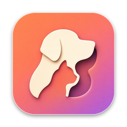

Privacy Policy
PetLift for Mac · Last updated 23 October 2026
Short version: your photos never leave your Mac. PetLift collects no data, has no account, no analytics and no tracking.
Your photos
You choose a photo of your pet, by dropping it in, picking a file, or picking it from Photos. PetLift reads only that one photo, cuts your pet out of it on your Mac with Apple's Vision framework, and saves the cut-out inside PetLift's own folder on your Mac. The photo and the cut-out are never uploaded to the developer or anyone else. Your original photo is not changed.
What PetLift stores
Your pets' cut-outs, names and sizes, and your settings, all on your Mac. Removing a pet in PetLift deletes its cut-out.
Activity
To let pets nap when you step away, PetLift asks macOS how long ago the keyboard or mouse was last used. That is a number of seconds. PetLift does not see what you type or click.
Purchases
PetLift Pro is bought through the Mac App Store. Apple handles the payment. The developer receives no payment details or personal information from Apple.
Children
PetLift collects no data from anyone, including children.
Contact
Peter Hallander, admin@stackedboost.com. If this policy changes, the new version will appear on this page with a new date.